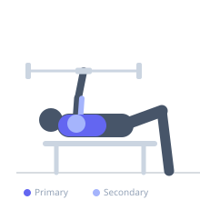

Exercise guide / Dual Landmine Standing Chest Press
Dual Landmine Standing Chest Press
The dual landmine standing chest press uses two barbells anchored side by side to perform a bilateral pressing motion that mimics the arc of a dumbbell press with the stability benefits of a fixed load path. Standing during the press increases core and hip engagement, making it both a chest and full-body stability exercise.
Primary muscles
pectoralis major clavicular
pectoralis major sternal
Secondary muscles
deltoid anterior
triceps lateral head
Stabilizers
transverse abdominis
external oblique
Equipment
Standard Barbell


Starting position
- Set up two landmine attachments side by side. Hold the free end of each barbell at chest height, standing with feet shoulder-width apart.
Setup
- Anchor two barbells in adjacent landmine sleeves. Load equal weight on each. Stand close enough to hold both bar ends at chest height simultaneously without awkward angles.
Steps
- Step 1: Hold both bar ends at chest height with palms facing inward.
- Step 2: Press both bars forward and slightly upward simultaneously, extending the arms.
- Step 3: At full extension, attempt to squeeze the hands toward each other to increase pectoral contraction.
- Step 4: Slowly lower both bars back to the chest in a controlled arc.
- Step 5: Maintain a neutral spine and braced core throughout all reps.
Coaching cues
- Press the bars in converging arcs
- Squeeze the chest at the top
- Keep the belly tight and ribs down
Breathing
- Exhale as you press forward. Inhale as you lower the bars back to the chest.
Range of motion
- Press until both arms are fully extended. Lower until hands return to chest level, keeping the bar ends together as much as possible.
Tempo
- 2-0-2-0
Common mistakes
- Allowing the elbows to flare far out to the sides
- Using momentum or leg drive to help each rep
- Letting the lower back arch excessively
Safety
- Ensure both landmine sleeves are secure and the barbells are equally loaded
- Start with the bars unloaded to learn the motion
- Have a spotter available when using heavier loads
Training
- strength: 5–8 reps
- hypertrophy: 8–12 reps
- strength: 3–5 sets
- hypertrophy: 3–4 sets
- Rest: {'strength': 180, 'hypertrophy': 90}